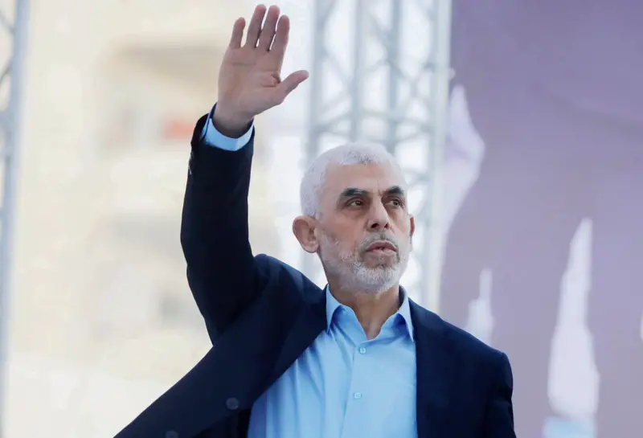

مقولة السنوار الشهيرة
انا قلت وأكرر إن كنا نخشى الموت، فنحن نخشى الموت على فراشنا كما يموت البعير. نخشى أن نموت في حوادث الطرق، أو بجلطة دماغية، أو بسكتة قلبية، لكننا لا نخشى أن نُقتل في سبيل ديننا، وفي سبيل وطننا، وفي سبيل مقدساتنا. فدماؤنا وأرواحنا ليست أغلى من دماء وأرواح أصغر شهيد قدَّم روحه الغالية في سبيل هذا الوطن، وهذا الدين، وهذه المقدسات. —السنوار في لقاء في برنامج «من النكبة.. إلى العودة» عام 2018 على قناة الجزيرة
نبذة عن الشهيد
يحيى السنوار هو أحد الشخصيات البارزة في المقاومة الفلسطينية، وقد وُلد في قطاع غزة. يعتبر من القادة الذين لعبوا دوراً مهماً في الحركة شغل يحيى السنوار منصب قائد حركة حماس في قطاع غزة منذ فبراير 2017. تميزت قيادته بالتركيز على تعزيز القدرات العسكرية وإقامة تحالفات مع إيران وحزب الله، ملتزمًا بتدمير إسرائيل. يُعتقد أنه، إلى جانب محمد الضيف، كان أحد المهندسين الرئيسيين لعملية طوفان الأقصى في 7 أكتوبر 2023. خططت المجموعة تحت قيادته لهذا الهجوم لمدة عامين قبل تنفيذه. بإطلاق هذا الهجوم، والذي هو الأكثر دموية في تاريخ إسرائيل، أشعل السنوار الحرب الفلسطينية الإسرائيلية في 2023، وهي واحدة من أكثر الصراعات دموية في القضية الفلسطينية. كما استدرج السنوار إيران وأعضاء آخرين في محور المقاومة بما في ذلك حزب الله، إضافة إلى حركة أنصار الله الحوثيون والمقاومة العراقية وحماس العراق، إلى الحرب مع إسرائيل. صُنِّف السنوار كإرهابي من قبل الحكومة الأمريكية في سبتمبر 2015.
تفاصيل الحادثة
في يوم معين، تعرض الشهيد يحيى السنوار لعملية اغتيال أدت إلى استشهاده. هذه الحادثة أثارت ردود فعل واسعة في الأوساط الفلسطينية والدولية.
في 17 أكتوبر 2024، أفاد الجيش الإسرائيلية بأن هناك «احتمالاً كبيراً» أن السنوار قد قُتِل. أطلق جنود من لواء بيسلماخ النار وتفرقت المجموعة، ودخل اثنان مبنى واحدًا والثالث الذي ثبت لاحقًا أنه السنوار، دخل مبنى آخر وصعد إلى الطابق الثاني. أصيب جندي من الجيش الإسرائيلي بجروح خطيرة أثناء تبادل إطلاق النار مع السنوار. ثم أطلقت دبابة قذيفة على موقع السنوار، وبدأ جنود المشاة في تمشيط المبنى لكن ألقى السنوار عليهم قنبلتين يدويتين؛ انفجرت إحداهما والأخرى لم تنفجر ثم انسحبت القوات وأرسلت طائرة مسيرة اكتشفته مصابًا بوجه مغطى يحاول إسقاط الطائرة المسيرة في الهواء مستخدمًا عصا. قُتل السنوار أخيرًا عندما انهار جزء من المبنى فوقه وهو مرتديًا زيًا عسكريًا، ويرتدي كوفية ويمسك ببندقية كلاشينكوف.
ترتيب الأحداث
حوالي الساعة العاشرة صباحًا في يوم 16 أكتوبر 2024، لاحظت قوات الجيش الإسرائيلي أشخاصًا مشبوهين يدخلون ويخرجون من مبنى في محيطهم، وبعد ذلك صدر أمر بالاشتباك. في الساعة الثالثة عصرًا، رصدت طائرة مسيرة تابعة للجيش الإسرائيلي ثلاثة مسلحين يخرجون من المبنى، وكان اثنان منهم يرتديان البطانيات ويُفسحان الطريق للشخص الثالث للدخول لمبنى. فتحت القوات النار، ودخل السنوار إلى مبنى آخر وصعد إلى الطابق الثاني. أُصيب جندي إسرائيلي بجروح خطيرة في تبادل إطلاق النار الذي تلا ذلك. أطلقت دبابة قذيفة على مكان تواجد السنوار، وبدأ الجنود في تمشيط المبنى. ألقى السنوار قنبلتين يدويتين باتجاه الجنود؛ انفجرت إحداهما ولم تنفجر الأخرى. تراجعت القوات بعد ذلك وأرسلت طائرة مسيرة رصدت شخصًا مصابًا مغطى الوجه يحاول إسقاط الطائرة باستخدام عصا. ذكرت تقارير إسرائيلية أن تشريح الجثة أظهر أن سبب الوفاة هو طلق ناري في الرأس.
خريطة الموقع
عمل الطلاب
مصطفى عبدالواسع الحناني
خالد صادق الزايدي